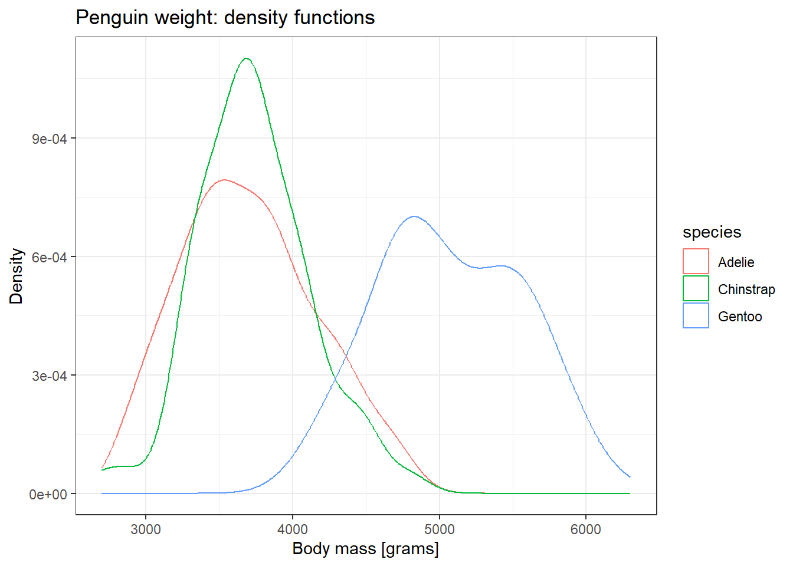

library(palmerpenguins)
library(tidyverse)
ggplot2::theme_set(ggplot2::theme_bw())4 ויז’ואליזציות
ויז’ואליזציות הן כלי קריטי בהבנה ובתקשור של נתונים (וחוץ מזה, הן כיפיות 😊). בפרק זה נלמד איך להפיק ויז’ואליזציות באמצעות חבילת ggplot2.
חבילת ggplot2 מבוססת על תיאוריה שנקראת דקדוק של גרפיקה (Wickham 2010). עקרונות התיאוריה מניחים את קווי היסוד הבאים לבניה של כל גרף. בקווים כלליים:
- כל משתנה ממופה למאפיין מסוים על הגרף (“אסטטיקה”), לדוגמה, משתנה יכול להיות ממופה לציר X לציר Y, והוא יכול להיות ממופה לצבע, גודל, שקיפות, צורה, ועוד.
- לאחר המיפוי מתווספות שכבות שנקראות גיאומטריות. ישנן גיאומטריות רבות והן קובעות כיצד יראה הגרף, לדוגמה נקודות (דיאגרמת פיזור), קווים, עמודות (bars), אריחים (tiles), קופסאות התפלגות (boxplots), ועוד.
- לבסוף מולבשים על הגרף עוד “קישוטים” כמו כותרות, מקרא, צירים, וכל מה שנדרש בשביל לשדרג לו את הניראות ואת הנהירות.
בחבילת ggplot2 יש עשרות רבות של גיאומטריות, והיא מאפשרת גמישות מירבית לייצר כמעט כל גרף שתצטרכו.
נדגים זאת כעת בסט הנתונים של הפינגויינים, תוך שאנחנו משתמשים בויז’ואליזציות על מנת להבין מה הקשר בין אורך לרוחב המקור.
4.1 הבסיס
נתחיל בגרף פשוט, ונתקדם ממנו לסדרה של גרפים. ראשית נטען את החבילות הנדרשות לנו לפרק, ונגדיר את התמה – עיצוב הגרפים – שבו נשתמש (הסבר נוסף על תמות בהמשך פרק זה).
penguins %>%
ggplot(aes(x = bill_length_mm,
y = bill_depth_mm)) +
geom_point()Warning: Removed 2 rows containing missing values (`geom_point()`).
ראשית מבחינת הנתונים המוצגים, לא ניתן להבחין בקשר משמעותי. במידה מסוימת נראה שעליה במשתנה bill_length_mm מעידה על ירידה במשתנה bill_depth_mm (כי ככל שמתקדמים בציר ה-x יש ירידה קלה של התצפיות בציר ה-y). זוהי מסקנה שגויה, ותיכף נבין למה, אבל לפני כן, עוד מספר הסברים:
הודעת האזהרה שמופיעה מעל הגרף מיידעת אותנו שיש שתי שורות שאינן באות לידי ביטוי בתרשים בשל ערכים חסרים (חסר נתון על אורך או עומק או שניהם).
בנוגע לתחביר:
הפונקציה
ggplotמגדירה תרשים.הארגומנט הראשון שלה הוא הדאטה עצמו (
penguins), שנכנס באמצעות האופרטור%>%.הארגומנט השני נכנס כפונקציה
aes()שמגדירה אסטטיקות. במקרה זה מוגדרים שני מיפויי אסטטיקות, לציר x ולציר y.לאחר מכן יש חיבור
+על מנת להוסיף שכבה של גיאומטריה מסוג נקודהgeom_point, וקיבלנו גרף.
4.2 מיפויים נוספים
כעת ניזכר שבדאטה מיוצגים שלושה זנים של פינגויינים, וייתכן שהקשר גם מושפע מעובדה זו. נוסיף מיפוי של זן הפינגויין לצבע של הנקודות. הוספה זו תתבצע עם הארגומנט color=species:
base_penguins_chart <- penguins %>%
ggplot(aes(x = bill_length_mm,
y = bill_depth_mm,
color = species)) +
geom_point()כעת לאחר הוספת הצבע ניתן להבחין בבירור בכך שבכל אחד מהזנים עליה במשתנה bill_length_mm מביאה לעלייה במשתנה bill_depth_mm (וזה בעצם הפוך למה שחשבנו כשהסתכלנו על התרשים מבלי לחלק לזנים של הפינגויינים השונים). זו תובנה מאוד משמעותית, שנקראת בשפה המקצועית “אינטראקציה”. יש אינטראקציה בין אורך המקור לבין זן הפינגויין בהשפעתם על עומק המקור. ניגע באינטראקציות גם בהמשך (בפרק על רגרסיה לינארית).
נוסיף לגרף גם שלושה קווי רגרסיה לינארית, עבור כל אחת מהקבוצות:
base_penguins_chart +
stat_smooth(method = "lm", se = FALSE)`geom_smooth()` using formula = 'y ~ x'Warning: Removed 2 rows containing non-finite values (`stat_smooth()`).Warning: Removed 2 rows containing missing values (`geom_point()`).
Note
כדאי להכיר - “פרדוס סימפסון”: התופעה שבה הבחנו בשינוי המשמעות של הקשר בין המשתנים כאשר מוסיפים אינטראקציה או זיהוי של הקבוצה, תוארה על ידי סימפסון (Simpson 1951). אחד מהגילגולים המודרנים של הפרדוקס הזה נמצא בדאטהסט שנוצר על ידי סימולציה ונקרא Datasaurus dozen (ראו Murray and Wilson 2021).
ב-Datasaurus משתמשים בסימולציה כדי לייצר שנים עשר קבוצות שבפני עצמן נראות זהות בפרמטרים מסוימים (ממוצע בציר x, ממוצע בציר y, סטיית תקן, קורלציה, וכו’), אבל כשמציגים את הנקודות בדיאגרמת פיזור, באופן מובחן בין הקבוצות, מקבלים את התרשים הבא:
library(datasauRus)
datasaurus_dozen %>%
group_by(dataset) %>%
summarize(mean(x),
mean(y),
sd(x),
sd(y),
cor(x, y))# A tibble: 13 × 6
dataset `mean(x)` `mean(y)` `sd(x)` `sd(y)` `cor(x, y)`
<chr> <dbl> <dbl> <dbl> <dbl> <dbl>
1 away 54.3 47.8 16.8 26.9 -0.0641
2 bullseye 54.3 47.8 16.8 26.9 -0.0686
3 circle 54.3 47.8 16.8 26.9 -0.0683
4 dino 54.3 47.8 16.8 26.9 -0.0645
5 dots 54.3 47.8 16.8 26.9 -0.0603
6 h_lines 54.3 47.8 16.8 26.9 -0.0617
7 high_lines 54.3 47.8 16.8 26.9 -0.0685
8 slant_down 54.3 47.8 16.8 26.9 -0.0690
9 slant_up 54.3 47.8 16.8 26.9 -0.0686
10 star 54.3 47.8 16.8 26.9 -0.0630
11 v_lines 54.3 47.8 16.8 26.9 -0.0694
12 wide_lines 54.3 47.8 16.8 26.9 -0.0666
13 x_shape 54.3 47.8 16.8 26.9 -0.0656datasaurus_dozen %>%
ggplot(aes(x = x, y = y)) +
geom_point() +
facet_wrap(~dataset)
בתרשים זה השתמשנו גם בפונקציות שראינו קודם, וגם בפונקציה נוספת שנקראת facet_wrap שמפרקת את התרשים לתתי-תרשימים, בכל אחד נמצאים הנתונים של קבוצה אחרת (מהמשתנה dataset).
4.3 כותרות גרף וצירים
כעת נייפה את הגרף עם כותרות:
pebguin_chart_w_lm <- base_penguins_chart +
stat_smooth(method = "lm", se = FALSE) +
xlab("Bill length [mm]") +
ylab("Bill depth [mm]") +
ggtitle("Relationship of bill length and depth in penguins",
subtitle = "Interaction with species (with linear regression)")
pebguin_chart_w_lm`geom_smooth()` using formula = 'y ~ x'Warning: Removed 2 rows containing non-finite values (`stat_smooth()`).Warning: Removed 2 rows containing missing values (`geom_point()`).
4.4 הגדרת תמות
ניתן להגדיר תמות (Themes) שיתנו לגרף חזות אחרת. בחבילת ggplot2 יש כמה תמות מוגדרות מראש שניתן להתחיל מהם וגם לעצב אותן מחדש. כדוגמה, נשתמש בתמה מסוג linedraw ונגדיר מחדש את מיקום המקרא ואת גודל הטקסט של הכותרות.
pebguin_chart_w_lm +
theme_linedraw() +
theme(legend.position = "top",
plot.title = element_text(size = 22),
axis.title = element_text(size = 15),
legend.box.background = element_rect(linetype = 1, linewidth = 1))`geom_smooth()` using formula = 'y ~ x'Warning: Removed 2 rows containing non-finite values (`stat_smooth()`).Warning: Removed 2 rows containing missing values (`geom_point()`).
Note
רוב הרכיבים בתוך התרשים נשלטים בתוך הפונקציהtheme באמצעות פונקציות הכוונה כגון element_text (מאפייני טקסט), element_rect (מאפייני תחום מרובע), element_line (מאפייני קווים), וכו’. בתיעוד הפקודה theme ניתן לעיין באפשרויות השונות.
Tip
השתמשו בפקודה facet_wrap כשכבה נוספת לתרשים הקודם על מנת לפצל את הזנים השונים לתתי-תרשימים. הדגמה לשימוש בפקודה נמצאת בחלק הקודם של פרק זה (בקוד שמסביר על פרדוקס סימפסון).
4.5 גיאומטריות נוספות
נדגים מספר גיאומטריות נוספות מההיצע הרב שיש בחבילת ggplot2. שימו לב, בסוף הפרק מדריך שיסייע לכם להחליט באיזה תרשים כדאי להשתמש לפי סוג המשתנים או היחס בין משתנים שאתם רוצים להדגים.
4.5.1 Boxplot
דיאגרמה מסוג Boxplot עוזרת לנו להבין את צורת ההתפלגות. הדיאגרמה מציגה “קופסה” שתוחמת 50% מהנתונים (החלק התחתון של הקופסה הוא רבעון ראשון, והחלק העליון של הקופסה הוא רבעון שלישי). במרכזה של הקופסה מוצג החציון קקו עבה (מחלק את התצפיות לחצי-חצי). ערכי קיצון, אם ישנם, מופיעים כנקודות. במידה ומופיעה קופסה שאינה סימטרית סביב החציון, הדבר מעיד על כך שההתפלגות אינה התפלגות נורמלית.
נציג את התפלגות המשקל של הפינגויינים בתרשים, בהפרדה לפי זן הפינגויינים, ומיד לאחריו נציג את החציון, ורבעונים של כל קבוצה.
penguins %>%
ggplot(aes(y = body_mass_g, x = species)) +
geom_boxplot() +
ggtitle("Penguin weight") +
xlab("Species") +
ylab("Mass [grams]")Warning: Removed 2 rows containing non-finite values (`stat_boxplot()`).
penguins %>%
filter(!is.na(body_mass_g)) %>%
group_by(species) %>%
summarize(median_mass = median(body_mass_g),
q1_mass = quantile(body_mass_g, 0.25),
q3_mass = quantile(body_mass_g, 0.75))# A tibble: 3 × 4
species median_mass q1_mass q3_mass
<fct> <dbl> <dbl> <dbl>
1 Adelie 3700 3350 4000
2 Chinstrap 3700 3488. 3950
3 Gentoo 5000 4700 5500איך מזהים ערכי קיצון?
ערכי קיצון היא בעיה בפני עצמה ואפשר להקדיש לה פרק, ואפילו ספר שלם. יש לערכי קיצון השלכות משמעותיות במגוון שימושים, החל ממודלים (כמו רגרסיה שנלמד עליה בספר זה) וחישובים שונים (ממוצע לדוגמה מושפע מאוד מערכי קיצון), דרך זיהוי אנומליות.
ערכי הקיצון מחושבים כ-1.5*טווח בין רבעוני מהרבעון הראשון מטה או מהרבעון השלישי מעלה, כלומר נקודות אשר מרוחקות לפחות פי 1.5 הטווח הבין רבעוני (הטווח “הסביר”) ביחס לרבעונים.
אם נמחיש זאת על קבוצת הפינגויינים מסוג Chinstrap. הרבעון הראשון מתקבל ב-3488 גרם, והרבעון השלישי מתקבל ב-3950 גרם. הטווח הבין רבעון לכן הינו 462. כלומר הטווח הבין רבעוני כפול 1.5 הינו 693.
כלומר, כל נקודה שנמצאת מחוץ לתחום של [3950+693, 3488-693] תיחשב כערך חריג ותסומן כנקודה.
extreme_hinges <- c(3488-693, 3950+693)
extreme_hinges[1] 2795 4643penguins %>%
filter(species == "Chinstrap") %>%
filter(body_mass_g < extreme_hinges[1] | body_mass_g > extreme_hinges[2])# A tibble: 2 × 8
species island bill_length_mm bill_depth_mm flipper_length_mm body_mass_g
<fct> <fct> <dbl> <dbl> <int> <int>
1 Chinstrap Dream 52 20.7 210 4800
2 Chinstrap Dream 46.9 16.6 192 2700
# ℹ 2 more variables: sex <fct>, year <int>4.5.2 צפיפות
תרשים נוסף שיכול לסייע בהבנת צורת ההתפלגות הינו תרשים שמציג את הצפיפות (תזכורת: פונקצית צפיפות הינה הפונקציה שהשטח שמתחת לה מהווה את פונקצית ההתפלגות. לגובה של פונקצית צפיפות אין משמעות בערך בפני עצמו, אלא רק בכך שסך האינטגרל מתחת לפונקצית הצפיפות שווה 1). הצפיפות יכולה להראות לנו האם ההתפלגות סימטרית, האם היא בעלת מודל אחד (פיק יחיד כמו בהתפלגות נורמלית) או בי-מודלית (שני פיקים, כמו בהרכבה של שתי התפלגויות נורמליות), וכן היא יכולה לסייע לנו להבין האם יש התפלגות אחרת שמתאימה לתיאור הנתונים. הפקודה שמייצרת גרף צפיפות היא geom_density.
penguins %>%
ggplot(aes(x = body_mass_g, color = species)) +
geom_density() +
ggtitle("Penguin weight: density functions") +
xlab("Body mass [grams]") +
ylab("Density")Warning: Removed 2 rows containing non-finite values (`stat_density()`).

כמה הבדלים בולטים מהתרשים:
- ניתן לראות שהשונות (הפיזור) במשקל הגוף גדול יותר בסוג Gentoo, וגם ב-Adelie קצת יותר מב-Chinstrap.
- ניתן לראות שב-Gentoo יש התפלגות בי-מודלית (שתי גבעות).
- ניתן לראות ששני הזנים Adelie ו-Chinstrap בעלי התפלגות סביב אותו משקל גוף.
Tip
נסו לשער מה מקור ההתפלגות הבי-מודלית בפינגויינים מזן Gentoo. בדקו את השערתכם עם תרשימים מתאימים.
רמז - נסו לבחון האם פיצול ה-Gentoo לפי משתנה נוסף מייצג שני גרפים בעלי דמיון רב יותר להתפלגות נורמלית (סימטרית ובעלת פיק יחיד).
4.5.3 היסטוגרמה
היסטוגרמה הוא גרף נוסף שנועד להציג התפלגות של משתנים רציפים, על ידי שבירה של הערכים הרציפים לערכים בדידים (קבוצות טווחים), בשונה מהגרפים הקודמים.
בנייה של היסטגרמה תתבצע באמצעות הפונקציה geom_histogram.
penguins %>%
ggplot(aes(x = body_mass_g, fill = species)) +
geom_histogram() +
ggtitle("Penguin weight: histogram") +
xlab("Body mass [grams]") +
ylab("Counts [# observations]")`stat_bin()` using `bins = 30`. Pick better value with `binwidth`.Warning: Removed 2 rows containing non-finite values (`stat_bin()`).
ניתן לשלוט במספר העמודות (ה-bins) על ידי הגדרה של הארגומנט bins= בתוך הפונקציה geom_histogram. הערך ברירת המחדל הינו 30 בינים.
4.5.4 בארים
בארים הם גרף עמודות. יש שתי גיאומטריות שמסייעות לנו בגרף עמודות: geom_bar ו-geom_col. ההבדל המרכזי ביניהן הוא ש-geom_bar מקבלת דאטה גולמי וסופרת, בעוד ש-geom_col מקבלת מוצר סופי. נמחיש זאת בדוגמה שמתארת את מספר התצפיות מכל סוג:
penguins %>%
ggplot(aes(species)) +
geom_bar() +
ggtitle("Number of penguins of eash species (geom_bar)")
penguins %>%
count(species) %>%
ggplot(aes(x = species, y = n)) +
geom_col() +
ggtitle("Number of penguins of eash species (geom_col)")
שתי הפקודות עם אותו הפלט בדיוק. אני באופן אישי מעדיף את השימוש ב-geom_col משום שיותר קל לעשות לה debug (בכך שנראה מה הדאטה שנכנס פנימה).
גרף בארים יכול להציג גם יותר ממשתנה אחד, לדוגמה אפשר להשתמש בו על מנת להציג את ההתפלגות של משתנה מסוים כפונקציה של משתנים אחר (קשר בין שני משתנים בדידים). נדגים זאת בתרשים הבא שיציג את התפלגות הדגימות של זנים שונים כפונקציה של מגדר.
penguins %>%
filter(!is.na(sex)) %>%
count(species, sex) %>%
ggplot(aes(x = sex, fill = species, y = n)) +
geom_col(position = position_fill()) +
ggtitle("Distribution of species for each gender") +
scale_y_continuous(labels = scales::percent) +
ylab("Proportion [%]") +
xlab("Sex")
ניתן לראות מהתרשים שהתפלגות הדגימה של הזנים דומה בין שני המגדרים תמהיל של כ-20% מסוג Chinstrap, 36% מסוג Gentoo, והיתר ממין Adelie.
הפונקציה position_fill מגדירה שיש לערום את הבארים אחד על השני כך שיסתכמו ל-100%, ישנן שתי אפשרויות נוספות: position_dodge, ו-position_stack.
Tip
נסו להחליף את הפונקציה position_fill בפונקציות האחרות (position_dodge, position_stack). באילו מקרים תשמשו בכל אחת מהפונקציות הללו?
Tip
צרו תרשים הפוך שבו מוצגת התפלגות המין של הפנגויינים לפי הזן (להפוך את התפקידים של ציר ה-x והמילוי של העמודות).
4.6 בחירת התרשים
על מנת לייצר תרשים טוב, עליכם לענות על השאלות הבאות:
- כמה משתנים אנחנו רוצים לתאר בתרשים (האם אנחנו רוצים לתאר התפלגות של משתנה אחד, קשר בין שני משתנים, או אולי קשר בין שלושה משתנים)?
- מהם סוגי המשתנים שאנחנו מתארים (בדידים או רציפים)?
- אילו גיאומטריות יכולות לשמש אותנו לתיאור זה, ואיזה משתנה ימופה לאן (לאיזו אסטטיקה)?
החלקים 1-2 נובעים מהבנה טובה של הדאטה, והצורך המחקרי/העסקי שלכם. בשביל חלק 3 תוכלו להיעזר ב-Cheatsheet שהכינו בחברת Posit (לשעבר RStudio). הוא מאפשר להבין לכל סיטואציה איזה סוג תרשים ידרש: קישור ל-Cheatsheet.
עברנו את התהליך הזה בדוגמאות שכבר ראינו בפרק זה, מבלי לציין זאת:
ב-Boxplot תיארנו קשר בין שני משתנים: המסה של הפינגויין (משתנה רציף) כתלות בזן של הפינגויין (משתנה בדיד), ולשם כך השתמשנו ב-
geom_boxplot.גם בצפיפות וגם בהיסטוגרמה תיארנו קשר זה של משתנה רציף למשתנה בדיד (רק צורת הצגה שונה-
geom_densityאוgeom_histogramבהתאמה).
כל אחת מהדוגמאות הנ”ל יכלו לשמש אותנו גם על מנת לתאר התפלגות של משתנה רציף יחיד, וגם על מנת לתאר קשר בין משתנה בדיד לבין משתנה רציף.
- בתרשימי הבארים השתמשנו על מנת לתאר התפלגות של משתנה בדיד יחיד (כגון זני הפינגויינים במדגם), או קשר בין התפלגויות של שני משתנים בדידים (מין הפינגויין למול זן הפינגויין).
דוגמה למתקדמים
נדגים דוגמה נוספת, הפעם כזו שמתארת קשר בין ארבעה משתנים. הקשר בין אורך המקור, עומק המקור, ומשקל של הפינגויין. מכיוון שלמדנו שישנו הבדל בין זנים שונים, אז גם נבצע אבחנה בין הזנים.
יש לנו שלושה משתנים רציפים (אורך, עומק, ומשקל)
יש לנו משתנה בדיד (זן)
מהסתכלות ב-Cheatsheet (פינה ימנית תחתונה בעמוד הראשון) נראה שישנן מספר גיאומטריות מתאימות
geom_contour,geom_countour_filled,geom_raster,geom_tile.
המשתנה התלוי שלנו הוא המשקל, ואנחנו רוצים לחקור איך הוא מושפע ממימדי המקור. לכן נמפה את אורך ועומק המקור לצירים x ו-y, ואת המשקל לצבע. באמצעות facet_wrap נייצר שלושה תתי-תרשימים (אחר לכל זן פינגויין).
penguins %>%
ggplot(aes(x = bill_length_mm, y = bill_depth_mm, fill = body_mass_g)) +
geom_raster() +
facet_wrap(~species) +
ggtitle("Bad example for geom_raster (due to low density)")
כפי שניתן לראות יש לנו בעיית רזולוציה, מכיוון שיש יחסית מעט תצפיות, כל פינגויין מסומן כמלבן עם המשקל שלו מסומן כצבע. התרשים לא מאוד אינפורמטיבי, ולא כל כך תורם להבנה. יש לגיאומטריה של geom_raster ארגומנט שנקרא interpolate, שאמור לעשות אינטרפולציה בין נקודות, אבל גם אם נפעיל אותו נקבל גרף מטושטש ולא ברור (הנקודות רחוקות מדי אחת מהשניה).
במקרה זה, אפשר לבנות לנו “אינטרפולציה משלנו”. נתאים מודל (נשתמש במודל רגרסיה לינארית פשוטה), של אורך מקור, עומק מקור, וזן הפינגויין.
penguins_model <- lm(body_mass_g ~ bill_length_mm + bill_depth_mm + species,
data = penguins)
penguin_ranges <- penguins %>%
group_by(species) %>%
summarize(across(c(bill_length_mm, bill_depth_mm),
list(min = ~min(., na.rm = T),
max = ~max(., na.rm = T))))הטבלה הבאה מציגה את טווחי אורך המקור, עומק המקור, ומשקל, עבור כל אחד מזני הפינגויינים.
gt::gt(penguin_ranges)| species | bill_length_mm_min | bill_length_mm_max | bill_depth_mm_min | bill_depth_mm_max |
|---|---|---|---|---|
| Adelie | 32.1 | 46.0 | 15.5 | 21.5 |
| Chinstrap | 40.9 | 58.0 | 16.4 | 20.8 |
| Gentoo | 40.9 | 59.6 | 13.1 | 17.3 |
נשתמש בנתוני הטבלה כדי לבנות טבלה חדשה שבה נמצאים כל הערכים האפשריים, וחיזוי שלהם על בסיס מודל הרגרסיה הלוגיסטית שבנינו.
step <- 0.5
penguin_grid <-
expand_grid(length = seq(32.1, 46, step),
depth = seq(15.5, 21.5, step),
species = "Adelie") %>%
bind_rows(
expand_grid(length = seq(40.9, 58, step),
depth = seq(16.4, 20.8, step),
species = "Chinstrap"),
expand_grid(length = seq(40.9, 59.6, step),
depth = seq(13.1, 17.3, step),
species = "Gentoo")
) %>%
rename(bill_length_mm = length,
bill_depth_mm = depth)
penguin_grid$body_mass_g <- predict(penguins_model, newdata = penguin_grid)
penguin_grid %>%
ggplot(aes(x = bill_length_mm, y = bill_depth_mm, fill = body_mass_g)) +
geom_raster(interpolate = TRUE) +
scale_fill_viridis_c() +
facet_wrap(~species) +
ggtitle("Bill length, depth, and mass for various species", subtitle = "Based on a linear regression model")Warning: Raster pixels are placed at uneven horizontal intervals and will be shifted
ℹ Consider using `geom_tile()` instead.
Raster pixels are placed at uneven horizontal intervals and will be shifted
ℹ Consider using `geom_tile()` instead.
כעת ניתן להצמיד פרשנות למודל על ידי עיון בגרף. נראה שסוג הפינגויין משפיע ביותר על המשקל: ל-Gentoo המשקל הגבוה ביותר, המתקבל כאשר האורך והעומק של המקור עולים (בפינה הימנית העליונה של התרשים הימני). פרטים של פינגויינים מזן ה-Chinstrap יכולים להיות בעלי מימדי מקור דומים, אך עדיין לא מגיעים לאותו המשקל כפי שנצפה ב-Gentoo.
בכל המקרים עלייה במימדי המקור (עומק ואורך) מצביעה על עלייה במשקל (בגלל זה לפינה העליונה הימנית בכל אחד מתתי התרשימים נצבעת בצבע יותר בהיר).
4.7 סיכום
בפרק זה למדנו להפיק תרשימים באמצעות חבילת ggplot2. דנו בייחודיות של החבילה בהיבט התיאוריה שמבססת אותה (the grammar of graphics), והבנו כיצד יש לתכנן תרשים (באמצעות מיפויים, גיאומטריות, והגדרות נוספות).
ראינו דוגמאות לגיאומטריות מסוימות כגון boxplot, היסטוגרמה, צפיפויות, וגרף בארים.
לבסוף ראינו כיצד ניתן לתכנן תרשים באמצעות בחינה של סוגי המשתנים והקשרים שאנחנו רוצים לזהות, וראינו דוגמה לתרשים אשר קושר בין ארבעה משתנים שונים, ומבוסס על מודל של רגרסיה לינארית.
המדריך העברי למשתמש ב-R נכתב על ידי עדי שריד בהוצאת מכון שריד